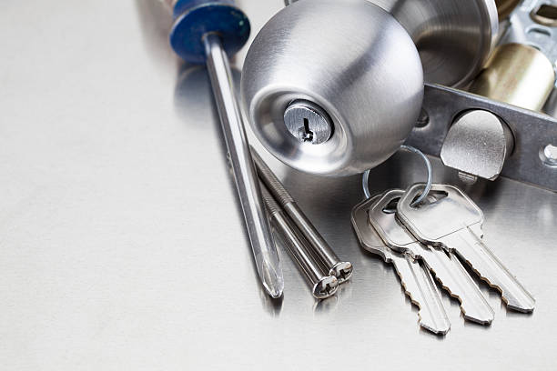

Porte claquée
à partir de 75€Ouverture sans casse quand la porte n’est pas verrouillée.
Porte claquée non verrouillée : à partir de 75€
Une urgence de serrurerie n’attend pas. Voici comment appeler efficacement, ce qu’il faut préciser pour gagner du temps et ce qui se passe à l’arrivée du serrurier.

Quelques situations qui justifient un appel immédiat.
Ouverture sans casse quand la porte n’est pas verrouillée.
Extraction du morceau puis contrôle du cylindre.
Remplacement du cylindre pour sécuriser la porte.
Mise en sécurité de la porte et contrôle de la serrure.
Donnez l’adresse exacte, l’arrondissement, l’étage, le digicode et le type de porte (simple, multipoints, blindée). Décrivez ce qui s’est passé : porte claquée, clé cassée, perte de clés, effraction.
Plus la description est précise, plus le serrurier prépare le bon matériel avant de partir, ce qui réduit le délai sur place.
Le blocage ne choisit pas son heure : les interventions sont possibles à toute heure, selon disponibilité. Le prix est annoncé avant l’intervention, quelle que soit l’heure.
La nuit, pensez à vous assurer que quelqu’un peut ouvrir l’immeuble : interphone allumé, digicode connu ou gardien joignable.
Le serrurier vérifie votre identité et votre lien avec le logement, examine la porte, puis annonce le prix. Si une ouverture sans dommage est possible, elle est privilégiée.
Aucune pièce n’est remplacée sans votre accord. Après l’intervention, la porte est testée et les clés vous sont remises.
Un double de clés confié à un proche, une serrure bien entretenue et un cylindre remplacé à l’usure évitent la plupart des urgences. Voir les guides changement de serrure et porte claquée.
Une démarche claire, même en urgence.
Adresse, étage, type de porte et description du blocage.
Contrôle de votre identité, diagnostic et prix annoncé.
Ouverture, réparation ou sécurisation après accord, puis test.
Pages dédiées avec quartiers, repères et spécificités de chaque arrondissement.
Oui, 24h/24 selon disponibilité. Précisez l’adresse et le blocage pour estimer le délai.
Oui, le week-end et les jours fériés, selon disponibilité.
Une porte claquée non verrouillée démarre à partir de 75€ ; le montant est annoncé avant l’intervention, quelle que soit l’heure.
Pièce d’identité, justificatif de domicile, digicode et étage.
Le délai dépend de la disponibilité et de l’arrondissement ; il est précisé au téléphone.
Ne forcez pas : décrivez l’état de la clé pour que le serrurier apporte l’extracteur adapté.
Appelez pour mettre la porte en sécurité et faire contrôler la serrure ; pensez aussi aux démarches auprès des autorités et de votre assurance.
Oui, dans les 20 arrondissements de Paris.
Appelez en indiquant l’arrondissement, l’étage, le type de porte et le problème. Le prix est annoncé avant intervention.